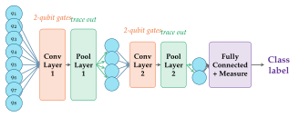
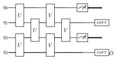

Chapter 11: Quantum Convolutional Neural Networks¶
Quantum convolutional neural networks (QCNNs) adapt the inductive biases of classical CNNs — translation equivariance, local feature extraction, and hierarchical pooling — to quantum circuits. They achieve an exponential reduction in trainable parameters compared to general-purpose VQCs and are provably free of barren plateaus. QCNNs have been successfully applied to quantum phase recognition and downscaled image classification.
Learning Objectives
By the end of this chapter, you will be able to:
-
Explain the QCNN architecture (convolutional + pooling layers)
-
Design translationally invariant quantum convolutional layers
-
Implement measurement-based quantum pooling
-
Apply QCNN to quantum phase recognition (1D Ising model)
-
Build and train a QCNN for image classification in PennyLane
11.1 From CNNs to QCNNs¶
Classical CNN ingredients and their quantum counterparts:
| Classical CNN | QCNN Analogue | Key Property |
|---|---|---|
| Pixel values | Qubit amplitudes | Exponential compression |
| Convolutional filter | 2-qubit unitary \(U(\boldsymbol{\theta})\) | Translationally invariant |
| Nonlinear activation | Born rule measurement | Quantum nonlinearity |
| Max/avg pooling | Tracing out qubits | Qubit reduction |
| Fully connected | Global measurement | Readout |
| Batch norm | (No direct analogue) | — |
11.2 QCNN Architecture¶

The QCNN was introduced by Cong, Choi & Lukin (2019) (Cong et al. 2019). For \(n = 2^k\) qubits, the QCNN has \(k\) alternating convolutional and pooling layers:
Layer structure:
-
Convolutional layer: Apply the same 2-qubit unitary \(U(\boldsymbol{\theta})\) to all neighboring pairs \((i, i+1)\), then to pairs \((i+1, i+2)\) (with step-1 shift). Same parameters across all sites (translational invariance).
-
Pooling layer: For each pair of qubits \((i, i+1)\): measure qubit \(i\); apply a classically controlled correction on qubit \(i+1\); discard qubit \(i\). Active qubits are halved at each pooling layer.

Parameter count: \(\log_2(n)\) layers \(\times\) \(O(1)\) parameters per layer \(= O(\log n)\) total (vs. \(O(n \cdot L)\) for hardware-efficient ansatz).
Note
The \(O(\log n)\) parameter count is both a feature (tractable optimization) and a limitation (limited expressibility). QCNNs are best suited for tasks with inherent hierarchical structure, like quantum phases of matter.
11.3 Quantum Convolutional Layers¶
The 2-qubit convolutional kernel \(U(\boldsymbol{\theta})\) can be any general 2-qubit unitary parameterized by \(\boldsymbol{\theta}\in\mathbb{R}^{15}\) (15 independent parameters for \(SU(4)\)). Common choices:
-
General \(SU(4)\): Full expressibility but many parameters
-
Ansatz with specific structure: \(R_{ZZ}R_{YY}R_{XX}\) (Ising-inspired)
-
Nearest-neighbor: \(R_{ZZ}(\theta_1)R_y(\theta_2)R_y(\theta_3)\) followed by CNOT
Translational invariance: Same \(\boldsymbol{\theta}\) for all pairs — exactly \(d\) parameters per convolutional layer (where \(d\) is the gate’s dimension).
11.4 Quantum Pooling Layers¶
Measurement-based pooling:
-
Measure qubit \(i\) in the computational basis; outcome \(m\in\{0,1\}\)
-
Apply classical feedback on qubit \(i+1\): \(X^m\) correction (or more general unitary)
-
Discard qubit \(i\) from the active register
This is the quantum analogue of max-pooling: the “strongest” information is propagated to the next layer via classical feedback.
Solved Example 11.1
Problem: Trace through 1 QCNN layer on 4 qubits in state \(|\psi\rangle = \alpha|0000\rangle + \beta|1111\rangle\).
Solution: After convolution \(U\) on pairs \((0,1)\), \((1,2)\), \((2,3)\) (simplified as identity here): state unchanged.
Pooling on pair \((0,1)\): Measure qubit 0.
-
With probability \(|\alpha|^2\): outcome 0, qubit 1 remains in state \(\alpha|0\rangle+\beta|1\rangle\) (for Bell-like \(|\psi\rangle\): actually need to trace through carefully)
-
With probability \(|\beta|^2\): outcome 1, apply \(X\) to qubit 1
After pooling: 2 active qubits remain. The information from qubits 0,2 is transferred to qubits 1,3.
11.5 QCNN for Quantum Phase Recognition¶
Application: Classify quantum phases of the 1D transverse-field Ising model:
Phase transition at \(h/J = 1\): ferromagnetic (\(h<J\)) vs. paramagnetic (\(h>J\)) phase.
Training: Input ground states \(|\psi_{\text{GS}}(h)\rangle\); labels: phase. QCNN output \(\langle Z_0\rangle\) close to \(\pm 1\) for the two phases.
Cong et al. (2019) showed QCNN achieves \(>99\%\) accuracy with only \(O(\log n)\) parameters and no barren plateaus.
11.6 QCNN for Image Classification¶
Approach for MNIST: downsample to \(4\times4 = 16\) pixels \(\to\) 16 qubits via amplitude encoding.
-
Flatten and normalize \(4\times4\) image to unit vector \(\mathbf{x}/\|\mathbf{x}\|\)
-
Amplitude encode: \(|\phi\rangle = \sum_i x_i|i\rangle\) (16 qubits? \(\to\) 4 qubits via \(\log_2(16)=4\)!)
-
Apply QCNN: 2 convolutional + 2 pooling layers, ending with 1 qubit
-
Measure final qubit: \(\langle Z\rangle > 0 \to\) class 0, \(\langle Z\rangle < 0 \to\) class 1
import pennylane as qml
from pennylane import numpy as pnp
import numpy as np
n_qubits = 8 # 8-qubit QCNN (3 pooling layers -> 1 qubit)
dev = qml.device("default.qubit", wires=n_qubits)
def conv_layer(params, wires):
"""Single convolutional layer: U(params) applied translationally."""
n = len(wires)
for i in range(0, n-1, 2): # even pairs
qml.IsingXX(params[0], wires=[wires[i], wires[i+1]])
qml.IsingYY(params[1], wires=[wires[i], wires[i+1]])
qml.IsingZZ(params[2], wires=[wires[i], wires[i+1]])
for i in range(1, n-1, 2): # odd pairs
qml.IsingXX(params[0], wires=[wires[i], wires[i+1]])
qml.IsingYY(params[1], wires=[wires[i], wires[i+1]])
qml.IsingZZ(params[2], wires=[wires[i], wires[i+1]])
def pool_layer(params, sources, sinks):
"""Pooling: measure sources, classically-conditioned correction on sinks."""
for source, sink in zip(sources, sinks):
# Simplified: controlled-unitary from source to sink
qml.CNOT(wires=[source, sink])
qml.RZ(params[0], wires=sink)
qml.CNOT(wires=[source, sink])
@qml.qnode(dev)
def qcnn_circuit(data, conv_params, pool_params):
"""QCNN with 3 conv+pool layers for 8 -> 1 qubit."""
# Data encoding (amplitude embedding)
qml.AmplitudeEmbedding(data, wires=range(n_qubits), normalize=True)
# Layer 1: Conv on all 8 qubits, pool 8->4
conv_layer(conv_params[0], list(range(8)))
pool_layer(pool_params[0], [0,2,4,6], [1,3,5,7])
active = [1, 3, 5, 7]
# Layer 2: Conv on 4 qubits, pool 4->2
conv_layer(conv_params[1], active)
pool_layer(pool_params[1], [1,5], [3,7])
active = [3, 7]
# Layer 3: Conv on 2 qubits, pool 2->1
conv_layer(conv_params[2], active)
pool_layer(pool_params[2], [3], [7])
return qml.expval(qml.PauliZ(7)) # final qubit measurement
# Initialize parameters
conv_params = pnp.random.randn(3, 3, requires_grad=True) # 3 layers x 3 params
pool_params = pnp.random.randn(3, 1, requires_grad=True) # 3 layers x 1 param
# Test forward pass
x = np.random.randn(2**n_qubits)
x = x / np.linalg.norm(x)
output = qcnn_circuit(x, conv_params, pool_params)
print(f"QCNN output: {output:.4f} (total params: {3*3 + 3*1} = 12)")
# Training loop
opt = qml.AdamOptimizer(stepsize=0.1)
# Combine params for optimizer
all_params = [conv_params, pool_params]
for step in range(20):
loss = lambda cp, pp: (qcnn_circuit(x, cp, pp) - 0.5)**2
conv_params, pool_params = opt.step(
lambda cp, pp: loss(cp, pp), conv_params, pool_params)
if step
print(f"Step {step}: loss = {loss(conv_params, pool_params):.6f}")
11.7 Chapter Summary¶
Chapter Summary
-
QCNN = quantum convolutional layers (shared 2-qubit unitaries, translationally invariant) + pooling layers (measure half the qubits each step).
-
Parameter count: \(O(\log n)\) — exponentially fewer than generic VQC.
-
No barren plateaus: Local convolutional structure and logarithmic depth provably prevent exponentially vanishing gradients.
-
Applications: Quantum phase recognition (Ising model) and downscaled image classification. Performance competitive with classical CNNs for the same input size.
-
Limitation: Only works well for hierarchically structured data; does not generalize to arbitrary classification tasks.
Exercises
Exercise . For an \(n=8\) qubit QCNN with the architecture described in this chapter, how many convolutional and pooling layers are needed? How many total parameters?
Exercise . Show that the measurement-based pooling is equivalent to tracing out the measured qubit from the density matrix, post-selected on the measurement outcome.
Exercise . Prove that QCNN gradients with local cost functions do not vanish exponentially with \(n\). Hint: Follow the argument of Cerezo et al. (2021).
Exercise . Implement a 4-qubit QCNN for binary classification of \(2\times2\) images (encoded as 4-qubit states). Train on a synthetic image dataset and plot the training curve.
Further Reading
-
Cong, Choi & Lukin (2019) (Cong et al. 2019) — original QCNN paper
-
Pesah et al. (2021) — absence of barren plateaus in QCNNs
-
Hur et al. (2022) — quantum convolutional neural network for classical data